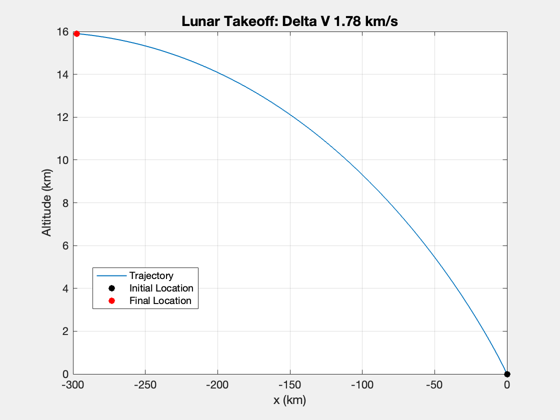

Contents
Lunar takeoff demo using bilinear tangent thrust programming.
Replicates the example in the reference.
%-------------------------------------------------------------------------- % See also: BilinearTangentVector, FOrbCart, RK4, Plot2D %-------------------------------------------------------------------------- % Reference: Arthur E. Bryson, Jr., Y. C. Ho, "Applied Optimal Control: % Optimization, Estimation, and Control," Orbit, p. 85. %--------------------------------------------------------------------------
%-------------------------------------------------------------------------- % Copyright (c) 2013-2014 Princeton Satellite Systems, Inc. % All rights reserved. %-------------------------------------------------------------------------- % Since version 2014.1 %--------------------------------------------------------------------------
Moon Properties
%----------------- muMoon = Constant('mu moon'); % km^3/s^2 rMoon = Constant('equatorial radius moon'); % km g = muMoon/rMoon^2; % gravitational constant at surface of Moon a = 3*g; n = 1000; % Orbit Properties %----------------- h = 15; % km - altitude r = rMoon + h; % km - radius u = sqrt(muMoon/r); % km/s (circular velocity) % Thrust acceleration %-------------------- TolX = 1e-7; TolFun = 1e-11; MaxFunEvals = 2500; Options = optimset('TolX',TolX,'TolFun',TolFun,'MaxFunEvals',MaxFunEvals); [uECI, t] = BilinearTangentVector( [0;r;0], [-u;0;0], g, a, h, n, Options,0 ); dT = t(2) - t(1); % Initial state %-------------- x = [0;rMoon;0;0;0;0]; % Size the array %--------------- xP = zeros(6,n); % Simulate %--------- for k = 1:n xP(:,k) = x; acc = uECI(:,k)*a; x = RK4(@FOrbCart,x,dT,t,acc,muMoon); end % Plot %----- [t, tL] = TimeLabl(t); s = sprintf('Lunar Takeoff: Delta V %4.2f km/s',n*dT*a); Plot2D(xP(1,:),xP(2,:)-rMoon,'x (km)','Altitude (km)',s); % Annotate the plot %------------------ hold on plot(xP(1,1),xP(2,1)-rMoon,'ko','MarkerFaceColor','k') plot(xP(1,end),xP(2,end)-rMoon,'ro','MarkerFaceColor','r') xLim = get(gca,'xlim'); legend('Trajectory','Initial Location','Final Location','Location','Best') %-------------------------------------- % $Id: fc6829ab6e05dde9d9e89f5b8d2317443be89d5f $